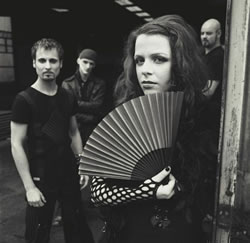
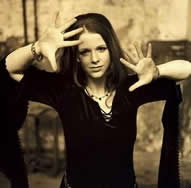
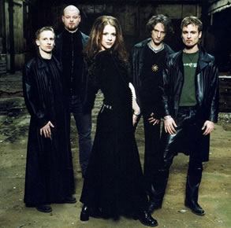

O projeto da banda alemã Xandria foi idealizado
em 1997, pelo seu fundador Marco Heubaum. Com várias formações
iniciais, Marco não conseguiu grande evolução
com sua banda e somente no ano de 1999, juntamente com o baixista
Roland Krueger e outros integrantes de sua antiga banda de metal,
consegue gravar uma demo com cinco músicas em um pequeno
estúdio. Entre as músicas estavam Kill the Sun,
Casablanca e So You Disappear.
No
ano seguinte, a banda começa a ganhar enorme notoriedade
após divulgar as cinco músicas pela internet. Assim,
através de sites de mp3, forma-se um grande número
de fãs. Por conseqüência, Marco decide levar
em frente seu projeto, nascendo verdadeiramente a banda Xandria.
Ainda em 2000, além de Marco e Roland, integram-se à
banda Lisa Schaphaus (vocais), Gerit (bateria) e Andreas Maske
(guitarra).
Inicialmente era Marco que fazia os vocais e a
voz de Lisa era usada apenas em algumas partes. Mas devido à
brilhante performance, Marco preferiu utilizar os vocais de Lisa
integralmente, escrevendo as músicas posteriores, já
com esse intuito.
Em 2001, Xandria se torna a banda mais famosa
no cenário underground e faz seus primeiros shows, para
pequenos públicos. O guitarrista Andy Maske deixa a banda
para se dedicar a seus estudos, já que a banda se preparava
para um maior público e necessitava de muito tempo disponível.
No seu lugar entra Philip Restemeier.
No ano seguinte, a banda começa a tocar
em shows maiores e a trabalhar duro em suas demos. A gravadora
Drakkar Records mostra interesse na banda que vinha evoluindo
desde 2000. Então, em dezembro de 2002, eles fecham o contrato
para gravar o disco de debute, que seria intitulado Kill the
Sun. O disco é gravado entre o final de 2002 e começo
de 2003, e chega às lojas em maio. A faixa título
do álbum emplaca como grande sucesso e entra do Top 100
alemão. O disco é bem diversificado contando com
várias misturas de estilos. As faixas Kill the Sun
e Mermaids são agradáveis de serem ouvidas,
pois o conjunto soa muito coeso, e os vocais são muito
bem colocados. O peso é bem dosado com os elementos obscuros,
criando um bom resultado. Ginger é uma faixa mais
cadenciada, mais lenta, mas não menos interessante, com
bom uso de teclados. Já em faixas como She’s
Nirvana é possível perceber um maior peso e
agressividade, ainda que contidos. Ainda é notória,
uma levada quase "grunge" de Casablanca, além
da pegada heavy de Wisdom. O cd também conta com
momentos mais suaves, como Forever Yours e a bela balada
atmosférica Calyx Virago.
Após
o lançamento desse primeiro disco, o Xandria faz vários
shows, incluindo uma grande turnê que durou três semanas,
formando cada vez mais, um grande número de fãs
pela Alemanha. Após um período agitado e de muito
trabalho, a banda volta ao estúdio no final do mesmo ano
e, no começo de 2004, terminam de gravar seu segundo álbum,
Ravenheart. Nessa época, o baixista Roland Krueger,
deixa a banda alegando motivos profissionais. Em seu lugar, entra
Nils Middelhauve, baixista que Lisa e Marco já conheciam,
através de outros trabalhos.
O disco é lançado em maio e acaba
sendo um sucesso maior ainda, ficando por sete semanas no Top
40 da Alemanha. Nesse trabalho a banda agregou elementos eletrônicos
de maneira bem suave, mas não perdeu sua personalidade
e a característica de agregar a melancolia ao peso do heavy
metal. As faixas, Ravenheart e The Lioness,
por exemplo, soam bem mais suaves do que o material apresentado
no cd anterior. As guitarras estão menos presentes, com
maior destaque para os teclados e a voz de Lisa Schaphaus. O talento
da banda, aliado à versátil voz de Lisa, acaba por
gerar momentos muito interessantes, como a pesada Five of
Universe, a épica Some Like It Cold e as
viajantes My Scarlet Name (belíssimo trabalho
de guitarras) e Too Close to Breathe. Petardos como Snow-White
e Black Flame soam agressivos e cortantes, perfeitos
para quem gosta da fusão Gothic Metal. Como bônus
ainda temos o belo videoclipe da faixa título, com um cenário
medieval e uma grande produção cinematográfica.
Passando na "prova do segundo álbum",
a banda é inserida de vez no cenário do Gothic Metal
europeu. A banda sai em sua turnê de divulgação
do álbum e chega a tocar para 30.000 pessoas no Busan
International Rock Festival na Ásia, como grande destaque.
Em outubro, a banda lança o single Eversleeping,
com três novos sons, além do videoclipe Eversleeping,
que fora gravado em um velho castelo, perto de Berlim.
No mês seguinte, o Xandria viaja com as
bandas finlandesas Entwine e Lab, e tocam em
alguns shows. Logo em seguida, em dezembro, começam a gravação
do terceiro álbum, India. Assim a banda entra 2005 com
muitas idéias para terminar o novo álbum, produzido,
assim como os anteriores, por Jose Alvarez-Brill. A banda ainda
convida para participar da gravação, a orquestra
alemã Deutsches Filmorchester Babelsberg, a mesma
que junto a John Williams ganhou o Oscar de melhor trilha sonora
em 2003, com o filme A Lista de Schindler, de Steven
Spielberg. No meio desse ano, Lisa e Nils se casam, após
um ano de namoro. Assim Lisa passa a ser Lisa Middelhauve.
India,
é lançado em agosto de 2005 e mantém a linha
dos discos anteriores, agregando um forte ingrediente orquestral
de muito peso. O álbum possui sons mais pesados e que se
contrastam com os vocais operísticos de Lisa, como acontece
em Black Silver e The End of Every Story. Em
compensação, há faixas onde o sentimentalismo
fala mais alto, como na melódica e acústica Dancer,
ou na surpreendente Like A Rose on The Grave Of Love,
que se encaixaria perfeitamente na trilha sonora de um filme medieval.
Esse trabalho consolida a grande carreira da banda, consagrando-a
no cenário mundial.
Duarante o ano de 2006, o Xandria dedicou-se à
divulgação de seu álbum mais recente. Além
da turnê India Tour a banda participou de diversos
festivais em países como a Inglaterra, Suíça,
México (juntamente com o Anathema) e a própria Alemanha.
No final deste mesmo ano, a banda deu início
às gravações do novo trabalho. Nos primeiros
meses de 2007 os integrantes se reuniram para organizar e selecionar
as composições. Finalmente, em maio, foi lançado
Salomé – The Seventh Veil. Este álbum,
gravado no Principal Studios (Alemanha), traz doze faixas que
priorizam as guitarras e linhas graves de baixo. É um trabalho
mais diversificado que os anteriores. A faixa Sisters of the
Light inclui elementos da música oriental. Em compensação,
The Wind and the Ocean é uma balada melodiosa
com riquíssimos arranjos de teclado que valorizam os vocais
de Lisa. Em seguida, a banda retomou as apresentações
ao vivo e participou de festivais como o Summer Breeze open
Air.
Assim, o Xandria, com um misto de metal, orquestras
e melodias sombrias, bem dosados, tem feito aparições
em grandes festivais, turnês mundiais e conquistado prêmios
na cena musical alemã, se tornando uma das grandes referências
em seu estilo.
Por
Spectrum
Downloads
Disponíveis: